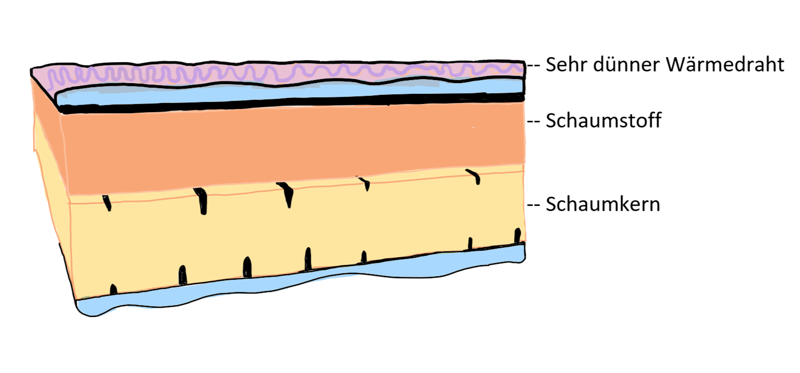

Unsere Produkte werden alle nachhaltig in Europa produziert. Die Stoffe sind aus Baumwolle und Schaumstoff, die von uns geprüften Produzenten kommen. Der Draht, welcher in den Produkten für die Wärme ist, ist natürlich auch nachhaltig Produziert worden.
